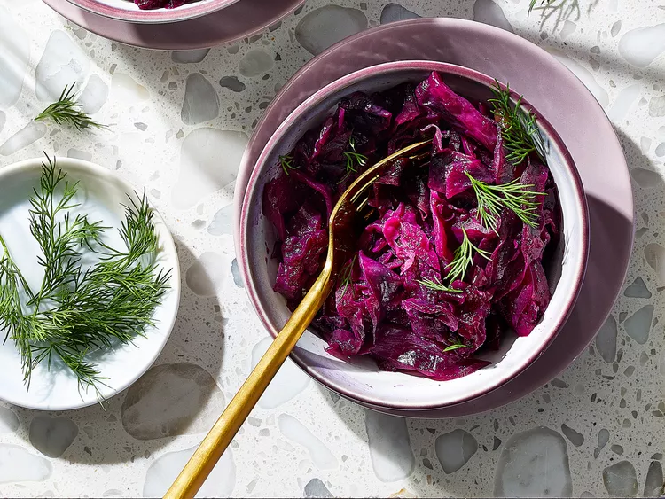

Grandma Jeanette's Amazing German Red Cabbage
Grandma Jeanette's Amazing German Red Cabbage">
Description
This German red cabbage recipe is an easy-to-make, sweet and sour side dish that pairs well with sausage or pork.
Ingredients
- 5 cups shredded red cabbage
- 1 cup sliced green apples
- ¼ cup white sugar
- 2 tablespoons butter
- ⅓ cup apple cider vinegar
- 3 tablespoons water
- 2 ¼ teaspoons salt
- ¼ teaspoon ground black pepper
- ¼ teaspoon ground cloves
Steps
- Gather all ingredients.
- Place cabbage, apples, sugar, and butter into a large pot. Pour in vinegar and water, then add salt, pepper, and cloves. Bring to a boil over medium-high heat.
- Reduce heat to low, cover, and simmer until the cabbage is tender, 1 1/2 to 2 hours.
- Enjoy!